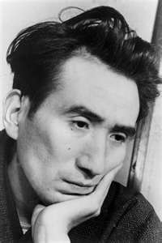

Cuando intentó suicidarse por primera vez, fue rescatado de morir ahogado, mientras que su compañera, una joven camarera, murió. En 1930 se matricula en la Facultad de francés de la universidad de Tokio, a pesar de conocer apenas este idioma, pero abandonó los estudios a los cinco años. Apoyó durante un tiempo las causas izquierdistas pero fue coaccionado para que reformara su pensamiento. En 1933 adoptó el seudónimo de Dazai Osamu y volvió a intentar suicidarse además se hizo adicto a la morfina. Su matrimonio en 1939 con una maestra de escuela le proporcionó un corto periodo de productividad. A pesar de ocasionales excesos, su estilo resulta particularmente ingenioso, variado y ajustado a los tonos y niveles del discurso.
Su autobiografía Tsugaru (1944) constituye una vuelta nostálgica y amorosa a sus raíces. Sus últimas obras, escritas tras la derrota de Japón en 1945, El sol poniente (1947) y Ya no humano (1948), reflejan a la perfección el sentimiento posbélico de fracaso nacional y de renacimiento traumático y le convirtieron en una celebridad. El 13 de junio de 1948, día en que cumplió 39 años, se suicidó en Tokio ahogándose junto con una admiradora.
